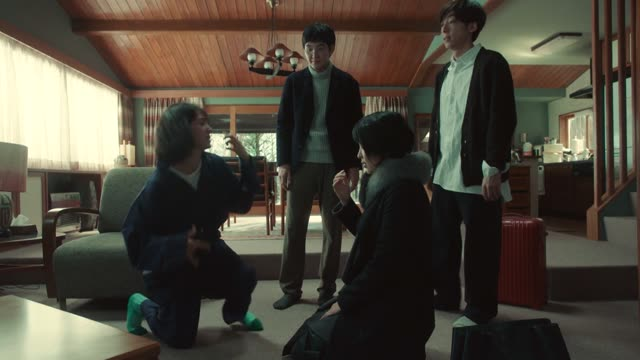
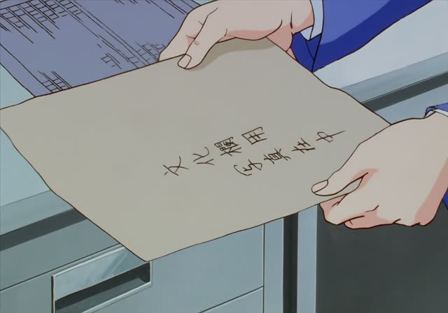
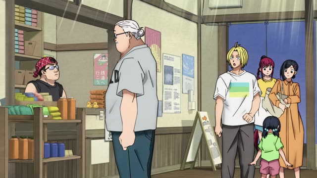
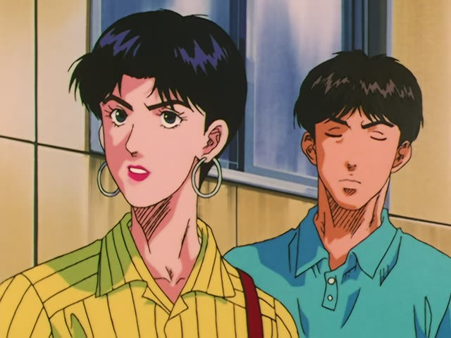

～ていく・～てくる
| Polite | ～ていきます・～てきます |
|---|---|
| Casual | ～ていく・～てくる |
Same meaning: "go and do / come back having done", or a change over time. Only the politeness changes.
Quartet · Episode 1
カーテンも買ってきました。
"I bought curtains too (and brought them)."
～てくる: do something and come back with it, or come here doing it. 買ってくる = go buy it and come back. ～ていく is the other way: do it and go off.
On this card, Maki moves into the shared house and shows she's already bought curtains. てきました makes it polite.
Both also show change over time: なってきた (it has become, up to now), なっていく (it will keep becoming).
Good Morning Call · Episode 9
ちょっと行ってくる。
"I'll be right back."
On this card, Uehara heads out. 行ってくる: go, and come back. Same as 行ってきます when you leave home.
Quick Examples
Leaving home in the morning.
行ってきます！
"I'm off! (and I'll be back)"
The set phrase is this grammar.
PoliteAt a picnic.
飲み物、買ってくるね。
"I'll go get drinks."
CasualTalking about the weather.
だんだん寒くなってきましたね。
"It's getting colder, isn't it."
Change up to now: てくる.
PoliteYour friend learns Japanese.
これから上手になっていくよ。
"You'll keep getting better from here."
Change going forward: ていく.
CasualWith and without
ケーキを買った。
"I bought a cake."
ケーキを買ってきた。
"I bought a cake (and brought it back here)."
Examples from Media

Quartet · Episode 1
今持ってきますね。
"I'll bring it right now."

Oishinbo · Episode 12
写真受け取ってきました。
"I picked up the photos."
Went, got them, came back.

Sakamoto Days · Episode 10
坂本さん、タオル持ってきましたか？
"Mr. Sakamoto, did you bring a towel?"

Slam Dunk · Episode 86
この先、陵南バスケ部がどう変わっていくか
"How Ryonan's team will change from here on"
Change going forward: ていく.
Kekkon Dekinai Otoko · Episode 1
私も結婚したくなってくるなあ。
"It's starting to make me want to get married too."
Change coming on: てくる.
Sakamoto Days · Episode 3
それよりピザ食いたくなってきたな。
"More importantly, I'm getting hungry for pizza."
Samurai Champloo · Episode 14
俺は自分の力だけで生きてきたんだ。
"I've lived by my own strength alone (all this time)."
Up to now: てきた.
Vinland Saga · Episode 3
だが、必ず帰ってくる！
"But I'll come back, for sure!"